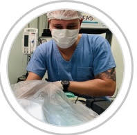

Médico Veterinário Aparício Mendes De Quadros CRMV/RS 12.288
Possui graduação em Medicina Veterinária pela Universidade de Passo Fundo - UPF (2012). Pós graduação em nível de especialização - Residência Integrada em Medicina Veterinária (2015), atuou como Médico Veterinário na Universidade de Passo Fundo principalmente na área médica e cirúrgica de pequenos animais.SOBRE A CLÍNICA CIRÚRGICA:
A Clínica cirúrgica exige do profissional médico veterinário o domínio das diferentes técnicas cirúrgicas somadas ao conhecimento da evolução pré e pós-operatória e suas variáveis, para tornar possível a tomada de decisões frente às diferentes afecções cirúrgicas apresentadas. Neste sentido e diante da diversidade de afecções, alguns conceitos são fundamentais e formam a base da formação do cirurgião veterinário.